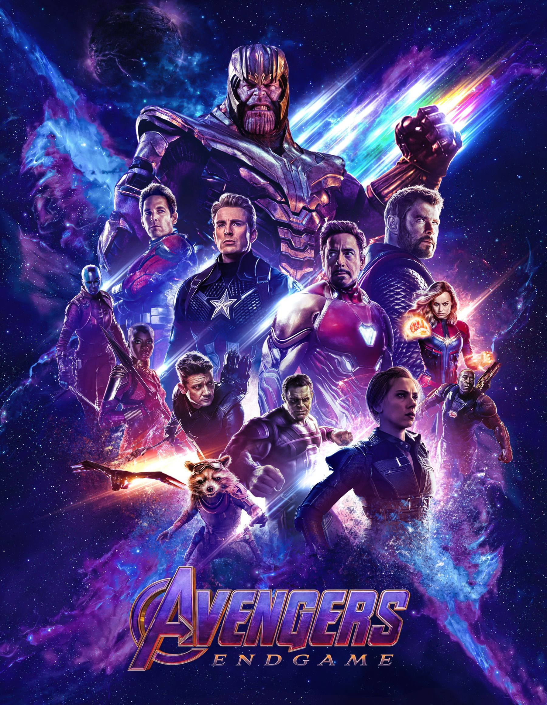
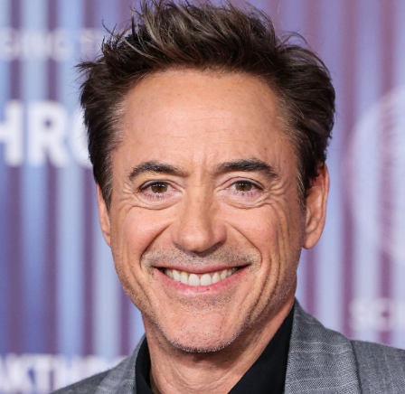
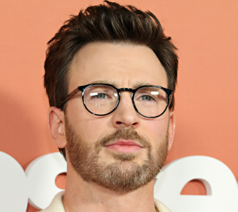
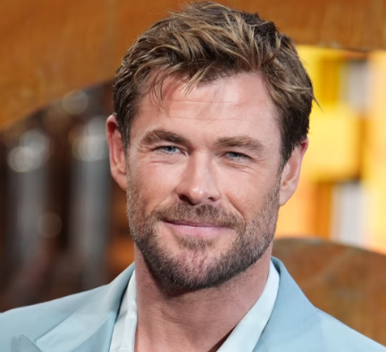

Avengers: Endgame is a 2019 superhero movie produced by Marvel Studios and directed by Anthony and Joe Russo. It is the sequel to Avengers: Infinity War and is the 22nd film in the Marvel Cinematic Universe. The movie follows the remaining Avengers as they try to undo the destruction caused by Thanos and bring back the people who disappeared.

Source: Marvel Studios
After Thanos uses the Infinity Stones to erase half of all life in the universe, the surviving Avengers are left dealing with the loss of their friends and loved ones. Five years later, the Avengers discover a possible way to change what happened. They reunite and travel through different points in time to retrieve the Infinity Stones. Their mission leads to a final battle against Thanos and his army, where the heroes must make difficult sacrifices to protect the universe.

Robert Downey Jr. plays Tony Stark, also known as Iron Man.

Chris Evans plays Steve Rogers, also known as Captain America.

Chris Hemsworth plays Thor, the God of Thunder.
Avengers: Endgame is one of my favorite movies because it brings together many characters and storylines from the Marvel Cinematic Universe. I enjoy the movie because of its action, emotional moments, humor, and the way it concludes the stories of several major characters. The movie is also memorable because of its large-scale battles and the teamwork between the Avengers.
My favorite part of Avengers: Endgame is the final battle because many of the heroes come together to fight Thanos. Seeing the Avengers reunite after everything they went through makes the scene exciting and memorable. I would love to experience it all over again as if I have never watched it before.